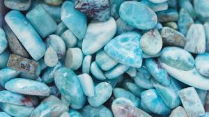

Larimar
Information
Larimar is a rare blue stone that comes from the Dominican Republic.
Larimar is said to enlighten and heal in a physical, emotional, mental and spiritual way. It represents peace and clarity, radiating healing and love energy. It is recommended for people who are stressed and it is said to be a healing stone. Larimar gemstones are overflowing with such calming energy.
Health Benefits
You can find here some Healing Properties.
Outfits